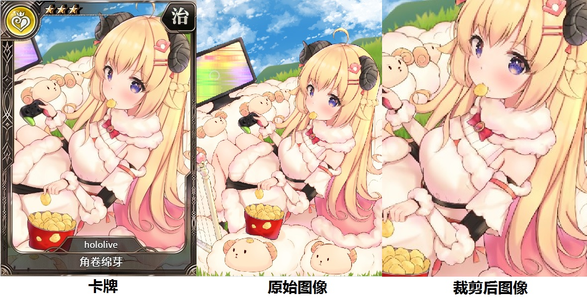

起因
随着广树大佬的维基萌抽卡系统卡牌数量的不断增加，给制卡过程中判断卡牌是否重复带来了困难，于是想写一个程序辅助判断卡牌是否重复。
本质上的任务就是判断两张图像是否是同一张，要能适应图像的缩放、裁剪和旋转。使用哈希(aHash、pHash和dHash)办法？经过测试，哈希方法并不能很好的适应图像的缩放、裁剪和旋转，模板匹配又不能很好地适应缩放和旋转，遂即采用特征点检测和匹配算法，当然也可以试试已经LIRE等CBIR引擎。关于特征点检测和匹配会单独开篇文章仔细研究，本篇文章仅记录卡牌判重程序的编写过程。
思路
可以将已经制好的卡牌全部拉下来，特征点检测后将描述子保存起来，每次制卡前将原始图像与所有卡牌进行匹配，即可判断是否重复。
开始
预处理与特征检测
为了避免卡牌边框对检测带来的影响，首先需要裁减掉卡牌的边框，裁剪之后进行特征检测。

orb = cv2.ORB_create() # ORB算法
card = cv2.imread(card_path)[80: 470, 85:370]
card_gray = cv2.cvtColor(card, cv2.COLOR_BGR2GRAY)
kp1, des1 = orb.detectAndCompute(card_gray, None) # des是描述子由于原始图像比较大，需要原始图像缩放，之后进行特征提取。
picture = cv2.imread(picture_path)
picture = cv2.resize(picture, (picture.shape[1] // 2, picture.shape[0] // 2))
picture_gray = cv2.cvtColor(picture, cv2.COLOR_BGR2GRAY)
kp2, des2 = orb.detectAndCompute(picture_gray, None)绘制特征点
image3 = cv2.drawKeypoints(card, kp1, card, color=(255, 0, 255))
image4 = cv2.drawKeypoints(picture, kp2, picture, color=(255, 0, 255))
特征匹配并筛选优秀点
# BFMatcher解决匹配
bf = cv2.BFMatcher()
matches = bf.knnMatch(des1, des2, k=2)
# Lowe's algorithm 获取优秀匹配点
good = []
for m, n in matches:
if m.distance < 0.7 * n.distance:
good.append([m])
print('优秀匹配点数目: %d' % len(good))关于Ratio值，Lowe推荐ratio的阈值为0.8，但作者对大量任意存在尺度、旋转和亮度变化的两幅图片进行匹配，结果表明ratio取值在0. 4~0. 6 之间最佳，小于0. 4的很少有匹配点，大于0. 6的则存在大量错误匹配点，所以建议ratio的取值原则如下:
ratio=0. 4：对于准确度要求高的匹配；
ratio=0. 6：对于匹配点数目要求比较多的匹配；
ratio=0. 5：一般情况下。
不过经过我的测试，0.7的情况下，当优秀点超过十个时，判断为重复图像的效果比较好。
image = cv2.drawMatchesKnn(card, kp1, picture, kp2, good, None, flags=2)
优秀点的数量为:50。
多几幅图试试。

优秀点数量为:24。

优秀点数量为:18。

优秀点数量为:37。
最终效果

参考文章